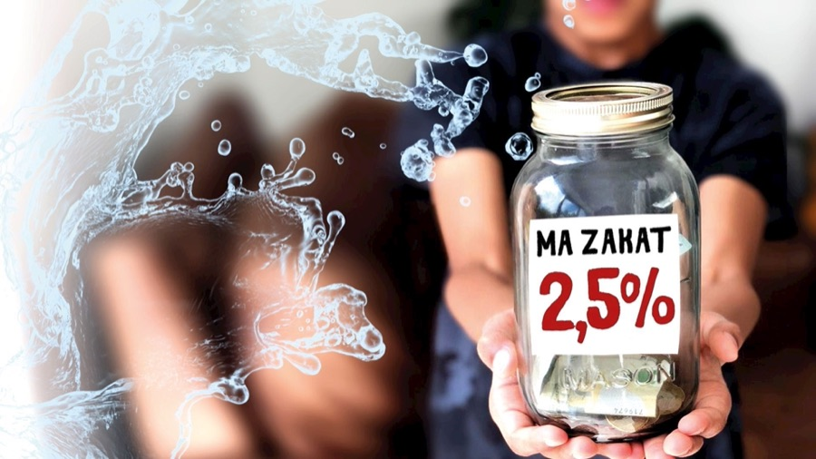
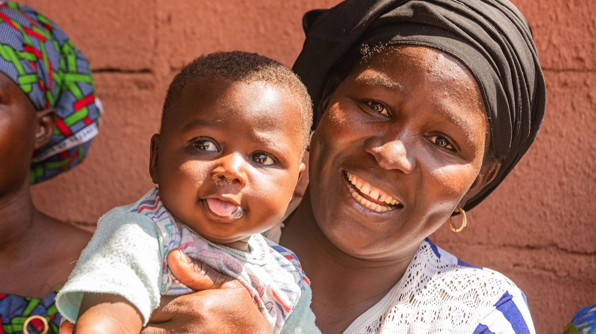
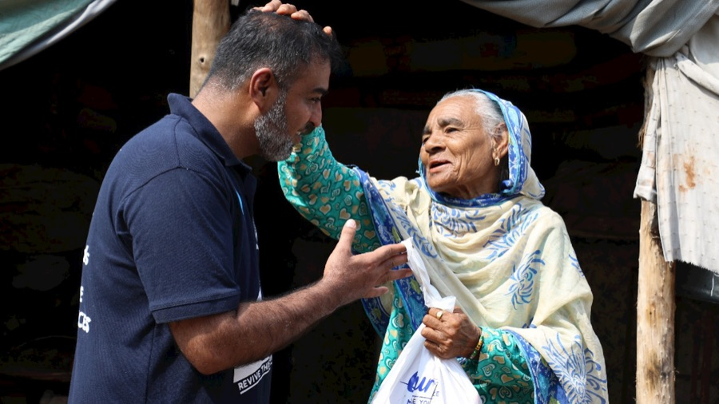
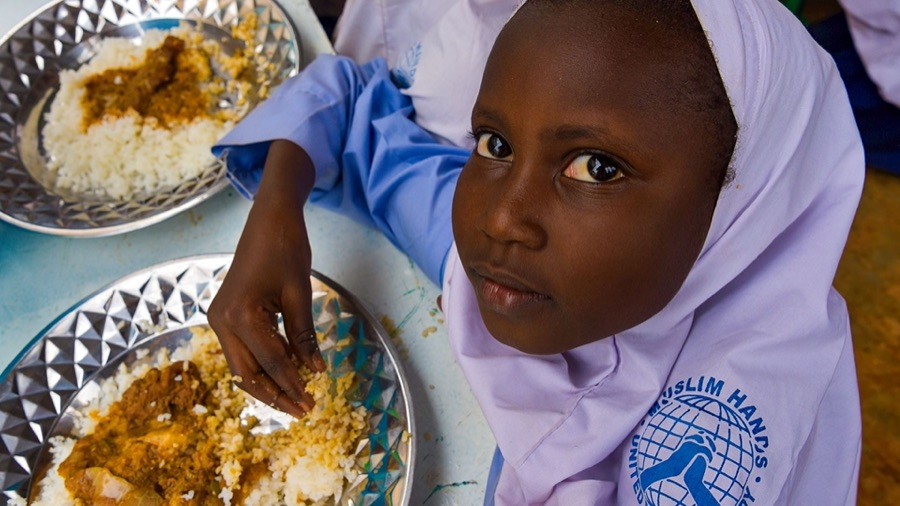

33 240donateurs en 2024
2 600puits et forages depuis 2007
450 000repas servis à Gaza avec le PAM
18pays d'intervention, 3 villes en France
Nos combats
Trois urgences qui ne peuvent pas attendre
Nos équipes locales sont déjà sur place. Votre don est engagé sous 72 heures, et chaque campagne se termine par un bilan public.
Un puits, c'est vingt ans d'eau potable.
Dès 350 €, à votre nom ou au nom d'un proche disparu. Photos et coordonnées GPS à l'inauguration.
Construire un puits
Nos domaines d'action
Secourir d'abord, puis rendre autonome
Une ONG humanitaire musulmane ne se contente pas de distribuer : elle construit. Chaque programme d'urgence débouche sur un projet de développement durable, conçu avec la communauté.
Eau potable
Puits, forages solaires, pompes. 135 000 personnes raccordées en 2024.
Orphelins
Parrainage dans la famille élargie, suivi scolaire et médical.
Éducation
Écoles de l'Excellence, kits scolaires, bourses, formation professionnelle.
Santé et maternité
Cliniques de Kaboul et Mogadiscio, kits de maternité, chirurgie de la cataracte.
Sécurité alimentaire
Usines à pain au Yémen et à Gaza, colis, repas chauds.
Moyens de subsistance
Élevage, couture, petit commerce : des familles autonomes en un an.

Où nous agissons
18 pays et 3 villes françaises
Membre du réseau Muslim Hands, né en 1993 à Nottingham, nous travaillons avec des bureaux et des partenaires présents depuis des années dans chaque pays.
Pays d'intervention en 2024
Survolez un pays pour le repérer sur la carte.
Votre zakat, notre responsabilité
Calculez et versez votre zakat al maal en deux minutes
Nisab actualisé chaque semaine, calculateur simple, versement en une fois ou par mois. Depuis 2007, plus de 15 millions d'euros de zakat distribués aux huit catégories d'ayants droit, avec des fonds séparés et tracés.
Nisab au 18 octobre 20261 154 € sur la base de l'argent9 900 € sur la base de l'or · 595 g d'argent ou 85 g d'or · pourquoi deux valeurs ?

100 %de la zakat aux ayants droit
Donner, concrètement
Ce que votre don devient
Chaque montant correspond à une action précise, et le reçu fiscal réduit votre coût réel de 66 %, ou de 75 % pour l'aide alimentaire en France.

30 €soit 7,50 € après réduction d'impôt de 75 %
Un colis chaleur pour une personne sans abri en France : duvet, bonnet, gants, thermos.
Offrir un colis chaleur
50 €soit 17 € après réduction d'impôt de 66 %
Un colis alimentaire qui nourrit une famille de cinq personnes pendant un mois.
Offrir un colis
900 €soit 306 € après réduction d'impôt de 66 %
Un puits de village pour 300 à 500 personnes, avec une plaque à votre nom.
Creuser un puits
Ils vous racontent
« J'ai été parrainé à huit ans, après la mort de mon père. Aujourd'hui, j'enseigne dans l'école où j'ai appris à lire. »Mamady, enseignant à Ségou, Mali, ancien enfant parrainé
En France
La solidarité commence à Paris, Lyon et Marseille
À Marseille, près d'un habitant sur quatre vit sous le seuil de pauvreté. Notre restaurant solidaire La Fourchette Fraternelle y sert des repas chauds et dignes, à table. À Paris et à Lyon, nos bénévoles font des maraudes chaque semaine et accompagnent 175 mineurs non accompagnés.
30 000repas chauds servis en 2024
1 800personnes sans abri accompagnées

Depuis 1993
Trente ans d'une aventure humaine
- 1993Une communauté de Nottingham se mobilise pour la Bosnie : Muslim Hands est née.
- 2007Création de Muslim Hands France à Paris, association loi 1901 d'intérêt général.
- 2015Premières Écoles de l'Excellence et programme de forages au Sahel.
- 2023Ouverture de La Fourchette Fraternelle à Marseille ; réponse d'urgence à Gaza.
- 202418 pays, 500 000 personnes aidées, 46 millions d'euros collectés en cinq ans.
- 2027Objectif : 3 000 puits et 5 000 orphelins parrainés.
Actualités et guides
Comprendre, suivre, agir
Guide · Zakat

Ramadan 2027 : les dates prévisionnelles en France